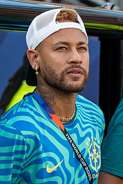
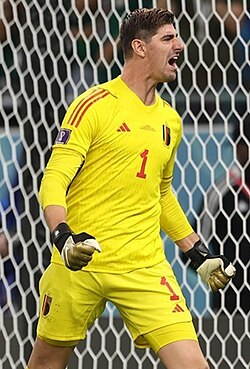
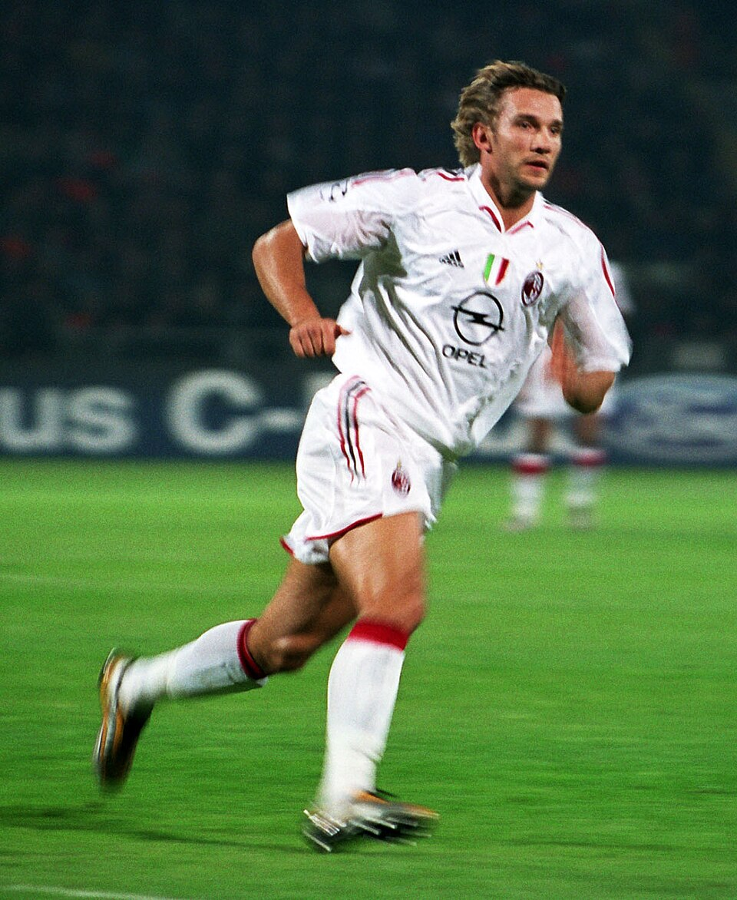

⚽
球员一览
 🇵🇹
🇵🇹
C罗
现效力 利雅得胜利
🇦🇷
梅西
现效力 国际迈阿密

🇧🇷
内马尔
现效力 桑托斯
🇦🇷
大马丁
现效力 切尔西
 🇳🇴
🇳🇴
哈兰德
现效力 曼城
🇪🇸
亚马尔
现效力 巴塞罗那
 🏴
🏴
贝林厄姆
现效力 皇家马德里
 🇧🇷
🇧🇷
维尼修斯
现效力 皇家马德里
 🇪🇬
🇪🇬
萨拉赫
现效力 特拉布宗
🏳️
哈里·凯恩
现效力 拜仁慕尼黑
🇧🇪
德布劳内
现效力 那不勒斯
🇭🇷
莫德里奇
现效力 AC米兰
 🇨🇴
🇨🇴
J罗
现效力 国民竞技
 🇫🇷
🇫🇷
登贝莱
现效力 巴黎圣日耳曼
🇪🇸
佩德里
现效力 巴塞罗那
 🏳️
🏳️
奥利塞
现效力 拜仁慕尼黑
 🇵🇹
🇵🇹
维蒂尼亚
现效力 巴黎圣日耳曼
 🇵🇹
🇵🇹
若昂·内维斯
现效力 巴黎圣日耳曼
🇬🇪
克瓦拉茨赫利亚
现效力 巴黎圣日耳曼
 🏳️
🏳️
赖斯
现效力 阿森纳
🏳️
萨卡
现效力 阿森纳
 🏳️
🏳️
帕尔默
现效力 切尔西
 🇩🇪
🇩🇪
维尔茨
现效力 利物浦
🇦🇷
阿尔瓦雷斯
现效力 马德里竞技
🇦🇷
劳塔罗·马丁内斯
现效力 国际米兰
 🇪🇸
🇪🇸
阿什拉夫
现效力 巴黎圣日耳曼
🇮🇹
多纳鲁马
现效力 曼城
🇧🇷
拉菲尼亚
现效力 巴塞罗那
🇳🇬
奥斯梅恩
现效力 加拉塔萨雷
🏳️
孙兴慜
现效力 洛杉矶FC
🇪🇸
库巴西
现效力 巴塞罗那
🇸🇪
伊萨克
现效力 利物浦
 🇮🇹
🇮🇹
托纳利
现效力 热刺
 🇦🇷
🇦🇷
恩佐·费尔南德斯
现效力 曼城
 🇪🇨
🇪🇨
凯塞多
现效力 切尔西
 🇫🇷
🇫🇷
萨利巴
现效力 阿森纳
 🇭🇺
🇭🇺
索博斯洛伊
现效力 利物浦
 🇧🇷
🇧🇷
埃斯特旺
现效力 切尔西
 🇨🇻
🇨🇻
沃齐尼亚
现效力 科洛科洛
🇫🇷
谢尔基
现效力 曼城
 🇺🇾
🇺🇾
巴尔韦德
现效力 皇家马德里
🇨🇳
韦世豪
现效力 成都蓉城
 🇨🇳
🇨🇳
武磊
现效力 上海海港

🇧🇪
库尔图瓦
现效力 皇家马德里
 🇧🇪
🇧🇪
卢卡库
现效力 费内巴切
🇮🇹
巴洛特利
现效力 伊蒂法克（阿联酋）
🇫🇷
本泽马
现效力 利雅得新月
🇧🇷
卡卡
已退役 · 巴西的足球运动员
🏳️
贝克汉姆
已退役 · 英国足球运动员（David Beckham）

🏳️
舍甫琴科
已退役 · 乌克兰足球运动员
🇮🇹
内斯塔
已退役 ·
🇮🇹
马尔蒂尼
已退役 · 意大利足球运动员
🇪🇸
劳尔
已退役 · 西班牙足球运动员
 🏳️
🏳️
罗本
已退役 · 荷兰男子足球运动员
 🇫🇷
🇫🇷
里贝里
已退役 · 法国足球运动员
 🏳️
🏳️
吉格斯
已退役 · 威尔士足球运动员
🏳️
鲁尼
已退役 · 英格兰足球运动员
 🇮🇹
🇮🇹
马特拉齐
已退役 ·
 🇫🇷
🇫🇷
齐达内
已退役 · 法国足球运动员、主教练
没有找到匹配的球员
你知道吗
- 最年长的球员是 马尔蒂尼（1968 年出生），最年轻的是 亚马尔（2007 年出生）。
- 本站球员来自 25 个不同的国家 / 地区；别名最多的是 C罗（5 个）。
- 其中 12 位是传奇名宿（已退役），47 位仍在征战。
- 每篇生平都整理自维基百科条目，页面底部保留了资料来源链接。
关于本站
本站仿照萌娘百科的 wiki 风格排版，为 59 位球员建立了人物页面。每位球员的资料（别名、生平经历、荣誉等）均取自维基百科并整理成中文简体，照片取自维基共享资源，未做虚构。
点击任意球员卡片即可进入 TA 的人物页面；页面内的“查看源码 / 历史”标签会跳转到本站的 GitHub 仓库。